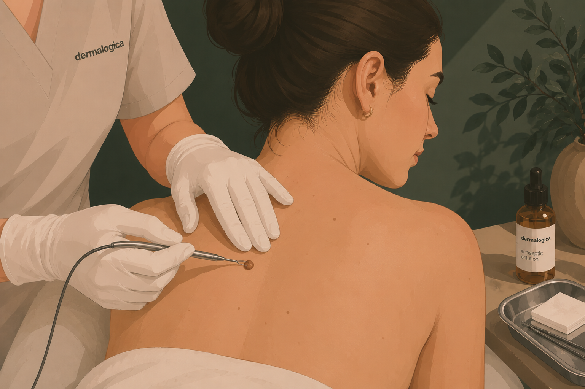

Milier är små, vita eller gulaktiga knottror som uppstår när keratin (ett hudprotein) fastnar under hudens yta. De är ofarliga men kan vara estetiskt störande, särskilt runt ögonen, på kinderna och näsan.
Vi behandlar milier genom att försiktigt öppna upp huden med en steril nål och varsamt tömma innehållet. Behandlingen är snabb, säker och ger omedelbart resultat.
Milier behandlas säkrast genom portömning under en djuprengörande ansiktsbehandling. Vi anpassar behandlingen efter antal milier och hudens behov — vid många milier rekommenderas den längre versionen för att hinna arbeta noggrant. Vid enstaka milier kan de pickas separat utan ansiktsbehandling.

För dig med få, ytliga milier och i övrigt frisk hud. En lugn djuprengörande behandling med fokus på återfuktning, lyster och balans — utan starka syror eller invasiva moment. Vi använder Dermalogica genom hela behandlingen.

För dig med flera milier eller tilltäppt hud i kombination. En djupgående portömningsbehandling som löser upp tilltäpptheter, rengör porerna på djupet och avslutas med antibakteriell högfrekvens samt lugnande mask. Utförs med Dermalogica.

För dig med många milier som kräver mer tid. Samma fullständiga protokoll som standardbehandlingen, men med förlängd och mer noggrann portömning av problemområden. Rekommenderas vid utbredda milier eller flera områden i ansiktet.

För dig med enstaka milier som du vill ta bort utan en hel ansiktsbehandling. Här pickas endast de milier du har — ingen rengöring, mask eller övrig hudvård ingår. Lämpligt vid få, väldefinierade milier eller om du redan har en pågående hudvårdsrutin.

För tonåringar under 20 år med tilltäppt hud, pormaskar eller begynnande akne. En skonsam men effektiv portömningsbehandling anpassad för ung hud — utan starka syror. Balanserar talgproduktion och förebygger nya orenheter.
"Duktig, trevlig och lugnande om man är nervös. Kan inte rekommendera henne nog."
Google"Isabella är professionell, noggrann, trevlig och kan sin sak."
Google"Alltid lika proffsig!"
Google"Så himla kunnig och alltid tid för att ge tips och ett trevligt samtal."
Bokadirekt"Mycket bra behandling, och framförallt lugnt och skönt!"
Bokadirekt"Mycket bra bemötande varje gång. Isabella är så trevlig. Jag är mycket nöjd!"
BokadirektBoka en konsultation så bedömer vi dina milier och rekommenderar bästa upplägg.